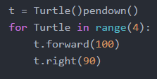
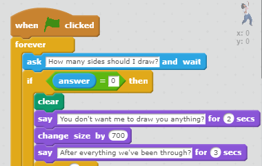
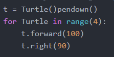
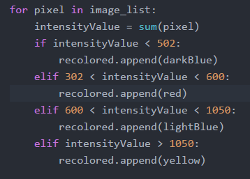
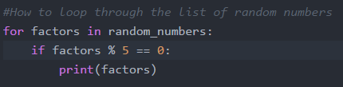
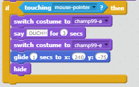
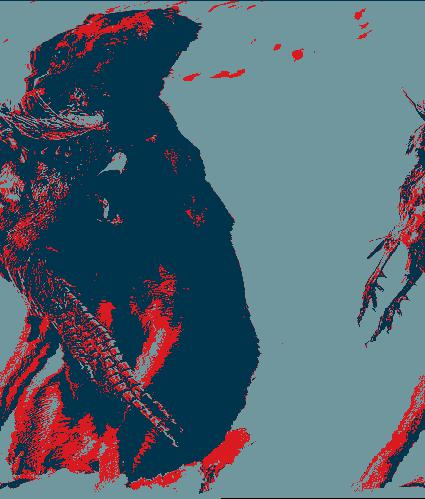

My name is Anna Francis. To briefly introduce myself to you, I enjoy listening to indie, funk rock,
and art rock music, but dislike listening to classical and country music. I've played clarinet for two
years in my middle school concert band as well as jazz band for a year. In highschool, I switched to the
tenor saxophone and played in one of the jazz bands called "Out of the Box." As much as I enjoy listening
and playing music, I also enjoy woodworking. Last year, I built a pintograph and a ukulele in my school's
woods shop. I am very excited to have enrolled in the Girls Who Code program and look forward to the rest
of the summer. Besides learning a bit of Processing before and coding my pintograph on Desmos, I have little
experience with coding. So far, I enjoy it very much.
Anna's favorite website
Hope you enjoyed!
Here is my favorite music video. Give it a look-see!
The director of this music video is Tobias Stretch. As you can see, he is an incredibly creative and talented individual. Hope you enjoyed this one as well!
Yesterday, I created a Side Scroller game in Scratch. Check it out below!
To make my website accessible to all users, I organized it in a way that users can easily click
interactive features and understand the content through an organized set up. Ideas that other people
used on their websites that interested me were moving background gifs, different fonts, and photo collages.
I am the most proud of learning how to use Javascript to creature certain features in my website that users
can interact with.
Core 4
Variables
Variables are factors that are used to store information in the python code. In other words, one would use a variable
to indicate the amount of something they want to represent. For instance, during the Drawing Shapes project, I used the
variable t to represent the Turtle program I incorporated into my code. Instead of writing "turtle.forward" to tell the
Turtle creating the shape to move forward, I could simply type "t.forward" instead.

Here is how a variable would appear in Scratch

In real life situations, variables are essential to solving problems or representing information. Take mathematicians,
for example. They constantly work with variables to represent pieces of information in equations. One of the many variables
they use is variable x, commonly used to represent an unknown ammount.
Loops
Loops repeat a certain code. It allows the code to repeatedly be executed when running.
Here is how a loop would appear in Scratch

Loops appear everywhere in the real world. A real life scenario would be working at a coffee shop for instant. For every customer, an employee would need to repeat steps in the process of making and serving them coffee.
1. Ask the customer for their drink order.
2. Fill the machine with the ground coffee of their choosing.
3. Measure and pour a certain amount of water through the machine
4. Fill a cup with the coffee
5. Add any extra ingredients of the customer's choosing
6. Serve the coffee
7. Collect their payment
Conditionals
Conditions limit and control the performance of specific actions depending on whether or not boolean conditions evaluate them to be true or false.
Here is how a conditional would appear in Python

Here is how a conditional would appear in Scratch
In real life situations, conditions can be used to limit certain amounts. For instance, football coaches have a limited amound of players they can add to their team, so they must use conditions to select the right ones.
Function
A function is a procedure that performs a certain operation. For instance, if you wanted your computer to raise the number 5 to the power of 3, then you would create a function that would multiply 5 by itself 3 times in a row.

Here is how a function would appear in Scratch

This function is essentially controlling the interaction between the Scratch character and the online user. If the user swipers their mouse pointer over the Scratch character, the character will switch costumes, respond by saying the word "OUCH!", switch yet again to another costume, and glide to the corner of the screen before disappearing.
In real life example of a function would be controlling the direction of a car. If you turn the steering wheel to the left, the front wheels will turn to the left and therefore steer your vehicle towards the left. If you change to a lower set of gears, the speed of your vehicle will lowered, thus allowing you to drive safely down steep hills.
Obamicon
Using lists in Python helps you structure your data in an efficient way. You have the option to pick between the three methods of lists: list.append, list.insert, and list.extend.
- "list.append" adds an element to the end of your list.
- "list.insert" allows you to insert an element at a given index in the list.
- "list.extend" involves two lists and allows you to combine both lists by adding the elements in the first list to the end of the second one.
Every group and partner I worked with worked well with working together to accomplish a task. I favor no particular group. Anyways, here is an image I altered using Obamicon on Python. Check it out below!

Robotics
This week, we learned how to construct circuits in order to make LED's blink, utilize resistors and push buttons,
and emmit sounds from piezos. We worked with Board of Education shields, breadboards, jumper wires, alligator clips,
resistors, LEDs, servos, piezos, 3-pin headers, push buttons, and whisker wires. We also utilized TinkerCad to
prototype LEDs light up on breadboard. Not only did we use Arduino to make robots "dance" to music we coded their
piezos to emmit, we also used it to program LEDs on circuit playgrounds to blink in certain patterns when buttons
were pressed.
Here is the robot my group and I programmed to play the song "Eye of the Tiger" it would dance to.
Genera, which is the name we gave our robot, was capable of moving back and forth on wheels to the tune of the music.
Here is a snippet of the code we programmed her with.
This code essentially gives her specific directions to sound spin around on her wheels and move forward and backwards
to the beat of the song.